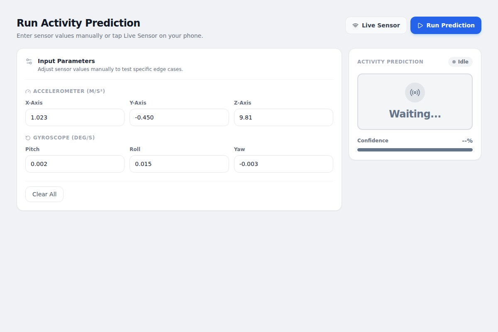

TURNING SENSOR READINGS INTO ACTIVITY
Can a phone understand
how we move?
HAR Router connects smartphone motion data to a machine learning pipeline that recognizes activities such as walking, sitting, and standing.
- THE BUILD
- A React interface, a FastAPI backend, and a Random Forest classifier. Live and manual input modes make the prediction workflow easier to explore.
- THE INTERESTING PART
- The model is only one piece. Readings need to become consistent windows and features before a prediction can mean anything.
PythonFastAPIReactscikit-learn
INSIDE THE PROJECT01 / 03

Sensor
readings→Window +
features→Model
prediction
Inspect the interface source ↗readings→Window +
features→Model
prediction